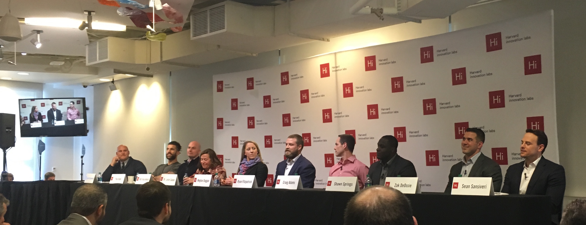

I attended "Rise of the Quantified Athlete" at the Harvard innovation Labs recently, a delightful unconference and discussion forum on the future of quantifiable performance in sports. While the primary focus was on the "Quantified Athlete" seemingly directed towards wearable sensors and fitness data, I can see this going much further than just individual stats. One key statement by Matt Hasselbeck (former QB - Colts, Titans, Seahawks, Packers, and 3-time Pro Bowler) in the forum`s Overtime panel highlights exactly this. Even if we have all this data, "So what?". Gathering all kinds of data is not the purpose, it`s about finding useful nuggets and actionable conclusions. Especially from the perspective of the Quarterback, individual nuances are less important when you have to keep track of 21 players on the field. If technology can help uncover patterns or recommend how to exploit them, it might become a critical part of a team`s preparation. Ryan Fitpatrick (QB, Jets, Texans, Titans, Bills, Bengals, Rams) mentioned that in addition to game film, he regularly uses virtual reality to explore what`s happening during plays in a 3-dimensional VR environment. As exciting as this sounds, I was surprised to hear that in terms of finding tendencies there`s little or no Advanced Statistics or Machine Learning being used.
Hasselbeck, Fitzpatrick and Zak DeOssie (LS, New York Giants, two-time Superbowl winner) hung around after the panel to interact with students, entrepreneurs and interested folks like me. After making some bad experiences in that respect with soccer players in Germany (yes, I haven't forgotten, Franz Beckenbauer!), it was unreal to talk to a starting NFL QB and actually answer his questions concerning what I'm working on.
I'd like to note an interesting answer from Matt Hasselbeck on what he would love to get from technology. Anything that helps players rest. During practice and games there's a ton of coaches and assistants telling players what to do, but once that's over, they are more or less left to themselves without being given recommendations on how to optimize resting. Interesting point! And it sounds like a relatively simple one to solve, too.
The panel was largely focused on data ownership/privacy vs. getting the most out of the data. Unsurprisingly, some athletes such as Paul Rabil (Lacrosse, Team USA) and Meghan Duggan (Hockey, Captain Team USA) seemed rather enthusiastic about having data available to help them optimize their habits, get the most out of their bodies, and maybe even having longer careers due to more sustainable exercise and injury avoidance. In contrast, Fitpatrick, Hasselbeck and Shawn Springs (former CB, Seahawks, Redskins, Patriots) pointed out potential issues for players beyond their peak. As an example, take an accomplished receiver slowing down towards the end of his career. With sensors, coaches can now monitor and recognize this, leading to potential loss of leverage in contract negotiations or even being cut from the roster. This is obviously a crucial point in this evolution of the game, and we are certain to hear how NFLPA and NFL settle on this matter.